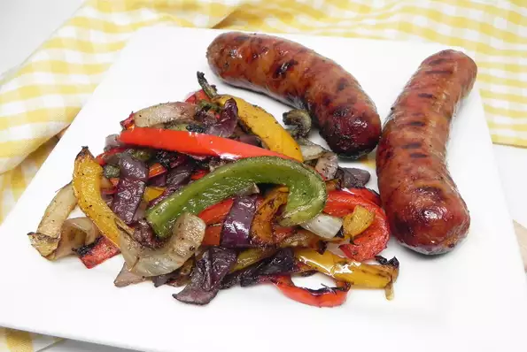

Grilled Italian Sausage and Peppers

Description
Back to Odin-Recipes
This is one of my favorite recipes. It is versatile in the sense that it
is delicious as is but also goes well paired with your favorite pasta and
sauce.
This recipe is great for a quick weeknight meal made from store bought
ingredients or you can class it up by making your own pasta sauce and
serving it all on top of spaghetti!
Ingredients
- 1 red bell pepper, cut into strips
- 1 green bell pepper, cut into strips
- 1 yellow bell pepper, cut into strips
- 1 small fresh okra pods, halved lengthwise
- 1 small red onion, sliced into petals
- 1 tablespoon olive oil
- ½ teaspoon dried Italian seasoning
- 1 pinch salt and ground black pepper to taste
- 5 (4 ounce) links hot Italian sausage links
Steps
-
Preheat an outdoor grill for medium-high heat and lightly oil the grate.
-
Combine bell peppers and onions in a large bowl. Add olive oil, Italian
seasoning, salt, and pepper. Stir to combine. Using a toothpick, poke 4
holes into each sausage to prevent them from exploding on the grill.
-
Place vegetables in a grill basket and cook for 2 minutes. Add sausage
directly to the grate and grill for 4 minutes. Flip sausage over, stir
vegetables, and grill for 4 minutes more.
Back to Odin-Recipes